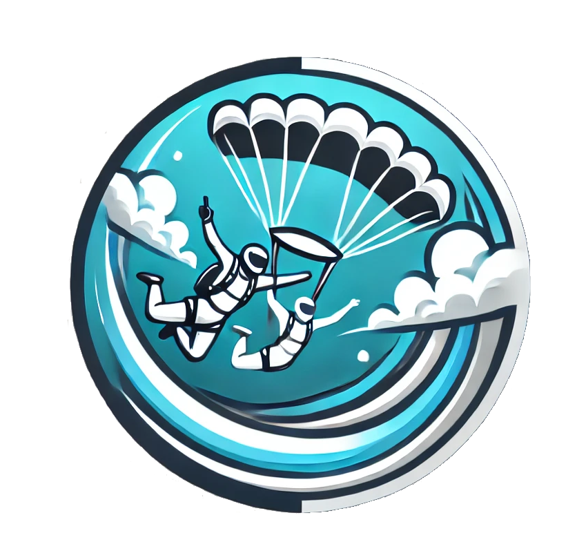

<header role="banner" aria-label="Site Header">
  <div class="screen-overlay" [ngClass]="{ open: isMenuOpen }" (click)="toggleMenu()" aria-hidden="true"></div>

  <div class="top-header" role="Main header">
    <div class="social-icons-container" aria-label="Social Media Links">
      <a
        *ngFor="let socialEntity of topHeaderSocialEntities | order : 'order'"
        [href]="socialEntity.ref"
        target="_blank"
        rel="noopener noreferrer"
        [attr.aria-label]="socialEntity.ariaLabel"
      >
        <fa-icon
          class="icon social-icon"
          [ngClass]="'social-icon-' + socialEntity.name"
          [icon]="socialEntity.icon"
        ></fa-icon>
      </a>
    </div>

    <div class="logo-mobile">
      <a href="/" aria-label="Idan-Skydive Home">
        
      </a>
    </div>

    <div class="phone-container">
      <a href="tel:+972528954775" class="phone-number-link" aria-label="Call us at 052-895-4775">
        @if (isMobileSize) {
        <!-- <fa-icon class="icon phone-icon" [icon]="icons.phone"></fa-icon> -->
        <mat-icon class="icon phone-icon" fontSet="material-symbols-outlined">phone_iphone</mat-icon>
        } @else {
        <span class="phone-text">052-895-4775</span>
        }
      </a>
    </div>
  </div>

  <nav class="nav-container" role="navigation" aria-label="Main navigation">
    <ul class="mobile-links nav-links clean-list" [class.open]="isMenuOpen" role="mobile-menubar">
      <li class="mobile-link close-link" role="none">
        <mat-icon class="close-link-icon" (click)="toggleMenu()" fontSet="material-symbols-outlined" aria-hidden="true"
          >close</mat-icon
        >
      </li>
      <li
        *ngFor="let navLink of navigationLinks | order : 'order'; trackBy: trackByNavLink"
        class="mobile-link"
        role="none"
      >
        <a href="#{{ navLink.ref }}" (click)="scrollToSection(navLink.ref)" role="menuitem" aria-current="page">
          {{ navLink.name }}
        </a>
        <mat-icon fontSet="material-symbols-outlined" class="link-icon" aria-hidden="true">{{ navLink.icon }}</mat-icon>
      </li>
      <li class="mobile-links-footer">
        <div class="mobile-links-social-icons" aria-label="Social Media Links">
          <a
            *ngFor="let socialEntity of topHeaderSocialEntities | order : 'order'"
            [href]="socialEntity.ref"
            target="_blank"
            rel="noopener noreferrer"
            [attr.aria-label]="socialEntity.ariaLabel"
          >
            <fa-icon
              class="icon social-icon"
              [ngClass]="'social-icon-' + socialEntity.name"
              [icon]="socialEntity.icon"
            ></fa-icon>
          </a>
        </div>
        <span class="mobile-links-text">בוא נקפוץ ביחד!</span>
      </li>
    </ul>

    <ul class="desktop-nav-links-right clean-list" role="desktop-menubar">
      @for(navLink of navigationLinks | slice:0:3; track navLink) {
      <li class="mobile-link" role="none">
        <a href="#{{ navLink.ref }}" (click)="scrollToSection(navLink.ref)" role="menuitem" aria-current="page">
          {{ navLink.name }}
        </a>
      </li>
      }
    </ul>

    <ul class="desktop-nav-links-left clean-list" role="desktop-menubar">
      @for(navLink of navigationLinks | slice:3:6; track navLink) {
      <li class="mobile-link" role="none">
        <a href="#{{ navLink.ref }}" (click)="scrollToSection(navLink.ref)" role="menuitem" aria-current="page">
          {{ navLink.name }}
        </a>
      </li>
      }
    </ul>

    <button class="hamburger-btn" (click)="toggleMenu()" aria-label="Toggle navigation menu" aria-controls="nav-links">
      <mat-icon class="hamburger-icon" aria-hidden="true">menu</mat-icon>
    </button>

    <mat-icon fontSet="material-symbols-outlined" class="fixed-nav-center" aria-hidden="true">Paragliding</mat-icon>

    <!-- //TODO: replace icon with logo image? -->
    <!--  -->
  </nav>
</header>
